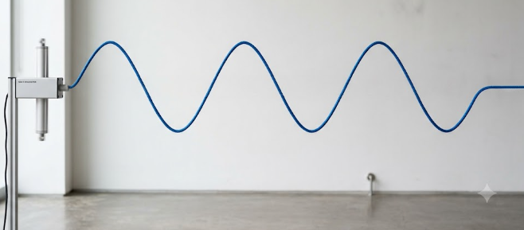
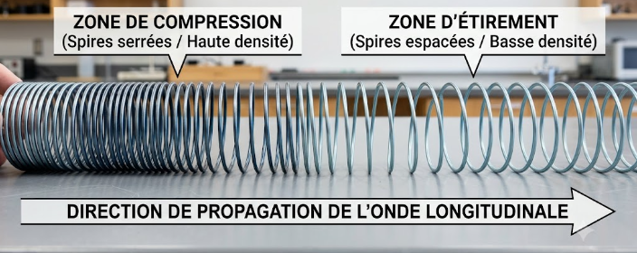

Une onde mécanique progressive est le phénomène de propagation d'une perturbation dans un milieu matériel, sans transport de matière, mais avec un transport d'énergie.
Une perturbation peut être produite par exemple en faisant claquer l'extrémité d'une corde tendue, en jetant un caillou à la surface de l'eau, ou lors d'un séisme (ondes sismiques). Une fois la perturbation créée, chaque point du milieu reproduit avec un léger décalage temporel le mouvement du point précédent : c'est ce décalage qui constitue la propagation.
La perturbation du milieu se fait perpendiculairement à la direction de propagation. Exemple : onde le long d'une corde, houle à la surface de l'eau.
La perturbation du milieu se fait parallèlement à la direction de propagation. Exemple : onde le long d'un ressort (compressions/étirements successifs), onde sonore dans l'air.


Deux vidéos (Δt = 40 ms entre deux images) illustrant la propagation d'une onde progressive à la surface de l'eau, selon la forme de la source : rectiligne (onde plane) ou ponctuelle (onde circulaire).
Un point M2 du milieu, situé à une distance d en aval d'un point M1, reproduit le même mouvement que M1 avec un retard τ (tau), qui correspond à la durée de propagation de la perturbation entre M1 et M2.
Une perturbation unique, non périodique, se propage le long d'une corde à la célérité c réglable, à partir de l'origine (chronomètre à 0). Observe l'instant où elle atteint M₁, puis M₂ : le retard entre les deux n'apparaît qu'à la fin, une fois les deux instants relevés.
Célérité c
📝 Application directe — Localiser l'épicentre d'un séisme
La célérité d'une onde mécanique n'est pas universelle : elle dépend de la nature du milieu et de ses propriétés (état, température, tension, etc.), mais pas de la perturbation elle-même.
| Milieu | Type d'onde | Célérité approximative |
|---|---|---|
| Air (20 °C) | Onde sonore | 340 m·s⁻¹ |
| Eau liquide | Onde sonore | 1 500 m·s⁻¹ |
| Acier | Onde sonore | 5 000 m·s⁻¹ |
| Corde tendue | Onde transversale | quelques m·s⁻¹ à quelques dizaines de m·s⁻¹ (dépend de la tension) |
| Croûte terrestre | Onde sismique (onde P) | environ 6 km·s⁻¹ |
Une onde mécanique progressive est dite périodique lorsque la perturbation à l'origine de l'onde se répète identique à elle-même à intervalles de temps réguliers. Chaque point du milieu atteint par l'onde reproduit alors un mouvement périodique.
Lorsque ce mouvement est décrit par une fonction sinusoïdale du temps, on parle d'onde progressive sinusoïdale (exemple : son pur émis par un diapason).
La période temporelle T est la plus petite durée au bout de laquelle le mouvement d'un point du milieu se reproduit identique à lui-même. La fréquence f est le nombre de fois que ce motif se répète par seconde.
À gauche, la photographie y(x) à l'instant présent (λ est repérée en bas, entre deux points en phase). À droite, le chronogramme y(t) du point M (repéré par le trait pointillé à gauche), construit en temps réel (T est repérée en bas). Le curseur « vitesse » permet de ralentir l'animation.
Période T
Longueur d'onde λ
Vitesse de l'animation
📝 Application directe — Diapason
En un point fixé du milieu, le mouvement se répète à l'identique toutes les périodes T (lecture d'un chronogramme y(t) en un point donné).
À un instant fixé, la forme de l'onde se répète à l'identique tous les longueurs d'onde λ (lecture d'une photographie du milieu y(x) à un instant donné).
À gauche, la photographie y(x) du milieu à l'instant présent (λ est repérée en bas). Le point M (trait pointillé violet) est un point fixe du milieu. À droite, le chronogramme y(t) de ce même point M se construit en temps réel (T est repérée en bas). Fais varier T et c pour observer l'effet sur chaque graphique.
Période T
Célérité c
La longueur d'onde λ (lambda) est la distance parcourue par l'onde pendant une durée égale à une période T. Elle correspond à la distance minimale séparant deux points du milieu qui vibrent en phase (même mouvement au même instant).
📝 Application directe — Onde à la surface de l'eau
Vidéo (Δt = 40 ms entre deux images) — les cercles concentriques illustrent la périodicité spatiale : la distance entre deux crêtes successives est la longueur d'onde λ.
Utilise les curseurs pour faire varier la période T et la longueur d'onde λ, ralentis l'animation avec le curseur « vitesse » si besoin, puis lance-la. Observe comment se déplace la perturbation (repère le point orange) et réponds aux questions ci-dessous.
Période T
Longueur d'onde λ
Vitesse de l'animation
Deux microphones M1 et M2, distants de d = 1,70 m, sont reliés à une interface d'acquisition. Un même claquement sonore est enregistré par les deux capteurs. Le chronogramme ci-dessous représente les deux signaux obtenus.
Lecture du chronogramme : le décalage entre les deux fronts de montée correspond à un retard Δt = 5,0 ms entre l'arrivée du son sur M1 et sur M2.
📝 Exploitation — Déterminer la célérité du son
📚 1. Onde progressive le long d'une corde
Hatier — Célérité d'une onde sur la corde.
📚 2. Précision d'une mesure
Hatier — Quelle précision lors de la détermination d'une célérité par chronométrage ?
📚 3. Une onde sur une corde
Hatier — Période, longueur d'onde, célérité et points en phase.
📚 4. Corde vibrante
Hatier — Points en phase et longueur d'onde.
📚 5. Onde périodique
Hatier — Détermination des grandeurs caractéristiques.
📚 6. Célérité d'une onde sinusoïdale
Hatier — Influence des facteurs physiques sur la célérité de l'onde.
Choisis le mode « Oscillate » (onde continue), règle la fréquence et l'amplitude, et observe la propagation le long de la corde.
Compare les ondes à la surface de l'eau, les ondes sonores et la lumière : trois milieux et trois célérités très différentes.
Visualise la propagation longitudinale d'une onde sonore (compressions/dilatations successives) dans un tuyau.
La fonction y(t) qui décrit le mouvement du vibreur à la source est fournie (elle n'est pas à écrire) : ce n'est pas elle qu'il faut comprendre en détail, mais son usage. Choisis un aspect à étudier ci-dessous, complète uniquement la donnée numérique manquante (___), puis exécute le programme.
Exercice 1 — Retard d'une onde sonore
Exercice 2 — Période et fréquence
Exercice 3 — Longueur d'onde dans l'eau
Exercice 4 — Retard d'une houle
Exercice 5 — Longueur d'onde d'un son dans l'air
Exercice 1 — Télémètre à ultrasons
Exercice 2 — Longueur d'onde d'un chant de baleine
Exercice 3 — Retrouver la période à partir de λ et c
Exercice 4 — Distance parcourue par une onde sismique (conversion d'unités)
Exercice 5 — Fréquence d'une onde ultrasonore
Exercice 1 — Localiser un épicentre à partir de deux types d'ondes
Exercice 2 — Relier chronogramme et photographie de l'onde
Exercice 3 — Propagation le long d'une corde
a. Calculer la durée τ mise par la perturbation pour atteindre l'autre extrémité de la corde.
b. Pendant cette propagation, un grain de poussière posé sur la corde à mi-longueur se déplace-t-il le long de la corde ?
Exercice 4 — Points en phase sur une corde
a. Que vaut la longueur d'onde λ ?
b. En déduire la période T du mouvement.
Exercice 5 — Deux microphones et un seul retard
a. Calculer le retard Δτ = τ₂ − τ₁ entre les deux microphones.
b. En déduire la célérité du son ce jour-là.
🌍 Localiser l'épicentre
Un institut de sismologie a perdu la localisation d'un épicentre juste avant une conférence de presse ! Résous les trois énigmes dans l'ordre pour reconstituer le code à 3 chiffres du coffre contenant les données de la station sismique.
1Station 1 — La bonne relation
Quelle relation relie correctement le retard τ, la distance parcourue d et la célérité c d'une onde ?
2Station 2 — Ondes P et ondes S
Les ondes sismiques P se propagent plus vite que les ondes S. Lors d'un séisme, laquelle des deux est enregistrée en premier par une station d'observation ?
3Station 3 — Lire une double périodicité
Sur le graphique y(x) d'une onde progressive sinusoïdale, tracé à un instant donné, la distance entre deux motifs identiques consécutifs correspond :
🔐 Coffre de la station sismique
Assemble les 3 chiffres trouvés, dans l'ordre des stations.
🎉 Coffre déverrouillé !
Bravo, tu as retrouvé les trois chiffres en raisonnant sur le retard, les ondes P et S, et la double périodicité. Les données de la station sont sauvées, la conférence de presse peut commencer !
Onde mécanique progressive
- Propagation d'une perturbation, sans transport de matière, avec transport d'énergie
- Onde transversale : perturbation ⊥ à la direction de propagation (corde)
- Onde longitudinale : perturbation ∥ à la direction de propagation (ressort, son)
- La célérité dépend du milieu, pas de la perturbation
Retard et célérité
- τ = d/c (retard entre deux points distants de d)
- Relation utilisée pour localiser une source d'onde (ex. épicentre d'un séisme)
- Chaîne de mesure : microcontrôleur ou smartphone pour déterminer c ou d
Onde périodique, onde sinusoïdale
- Onde périodique : la perturbation se répète identique à intervalles réguliers
- f = 1/T (fréquence et période temporelle)
- Onde sinusoïdale : mouvement décrit par une fonction sinus du temps
Double périodicité — longueur d'onde
- Périodicité temporelle T (lue sur y(t), en un point) / périodicité spatiale λ (lue sur y(x), à un instant)
- λ = c×T ⟺ c = λ/T = λ×f
- λ : distance minimale entre deux points vibrant en phase
- Onde mécanique progressive
- Propagation d'une perturbation dans un milieu matériel, sans transport de matière, avec transport d'énergie.
- Perturbation
- Modification locale et temporaire d'une grandeur physique du milieu, à l'origine de l'onde.
- Onde transversale
- Onde pour laquelle la perturbation du milieu se fait perpendiculairement à la direction de propagation.
- Onde longitudinale
- Onde pour laquelle la perturbation du milieu se fait parallèlement à la direction de propagation.
- Retard (τ)
- Durée mise par une perturbation pour se propager d'un point à un autre du milieu : τ = d/c.
- Célérité (c)
- Vitesse de propagation d'une onde dans un milieu donné ; dépend du milieu, pas de la perturbation.
- Onde périodique
- Onde pour laquelle la perturbation se répète identique à elle-même à intervalles de temps réguliers.
- Onde sinusoïdale
- Onde périodique dont le mouvement de chaque point est décrit par une fonction sinus du temps.
- Période temporelle (T)
- Plus petite durée au bout de laquelle le mouvement d'un point du milieu se reproduit identique à lui-même.
- Fréquence (f)
- Nombre de répétitions du motif périodique par seconde ; f = 1/T, exprimée en hertz (Hz).
- Périodicité temporelle
- Répétition régulière du mouvement en un point fixé du milieu, au cours du temps (période T).
- Périodicité spatiale
- Répétition régulière de la forme de l'onde dans l'espace, à un instant donné (longueur d'onde λ).
- Longueur d'onde (λ)
- Distance parcourue par l'onde pendant une période T ; distance minimale entre deux points vibrant en phase. λ = c×T.
- Double périodicité
- Propriété d'une onde périodique de posséder simultanément une périodicité temporelle T et une périodicité spatiale λ.
- Ondes P et ondes S
- Deux types d'ondes sismiques de célérités différentes (P plus rapide que S), utilisées pour localiser un épicentre.
🎬 Ondes mécaniques progressives
Vidéo d'introduction — document 1 du TD « Ondes mécaniques progressives »
🎬 Son et bougies
Nathan · chap. 16 p326 · 0:38 — une bougie s'éteint sous l'effet du son émis par un haut-parleur
🎬 Ondes mécaniques périodiques — Longueur d'onde, célérité et période
e-profs · 4 min 07
🎬 Ondes mécaniques (bilan)
Hatier · 2 min 11
🎬 Période, fréquence, longueur d'onde… Comment CALCULER ?
Paul Olivier · 7 min 07
🎬 Onde mécanique — Célérité et retard
Paul Olivier · 3 min 36
🎬 Célérité d'une onde mécanique — Retard ?
Paul Olivier · 3 min 10
🎬 Déterminer la période et la fréquence d'un signal
Hatier · 3 min 37
🌊 Ostralo — Animations ondes mécaniques
Animations interactives : onde le long d'une corde, cuve à ondes, période/fréquence.
🧲 Simulateur PhET — Onde sur une corde
Simulation interactive : génère une onde continue ou une impulsion, règle amplitude et fréquence.
🔁 Propagation d'une onde circulaire
Académie de Grenoble — animation d'une cuve à ondes (onde circulaire à la surface de l'eau).
🎺 Ostralo — Onde sonore dans un tuyau
Propagation longitudinale d'une onde sonore (compressions/dilatations successives).
🌊 Simulateur PhET — Introduction aux ondes
Compare ondes à la surface de l'eau, ondes sonores et lumière.
🔁 PCCL — Onde progressive : impulsion, signal transversal, célérité (corde)
Animation flash — propagation d'une impulsion transversale le long d'une corde.
🔁 PCCL — Onde progressive longitudinale (ressort)
Animation flash — propagation longitudinale le long d'un ressort.
🔁 PCCL — Onde progressive périodique : double périodicité (corde)
Animation flash — périodicité temporelle et spatiale, longueur d'onde et période.
🔁 PCCL — Activité : double périodicité (corde)
Animation flash avec activité guidée sur la double périodicité (corde).
🔁 PCCL — Activité : onde longitudinale périodique (ressort)
Animation flash avec activité guidée sur l'onde longitudinale périodique (ressort).
🐍 Propagation d'une onde périodique
Voir l'onglet Activités → Activité Python : aspects temporel et spatial, exécutés directement dans la page (adapté des scripts Hatier).
🐍 Fichiers Python — Hatier (pc1331)
Scripts originaux à télécharger et fiche d'accompagnement (chap. 15 p. 331).